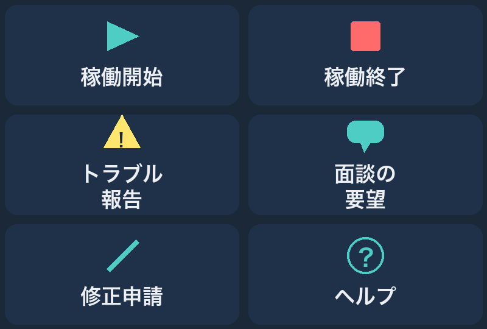
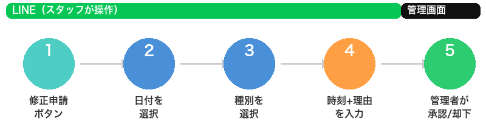
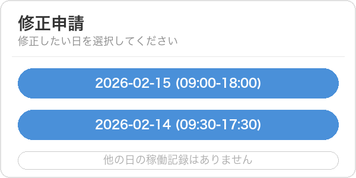
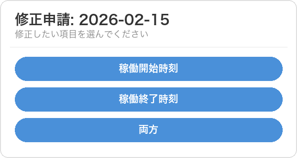
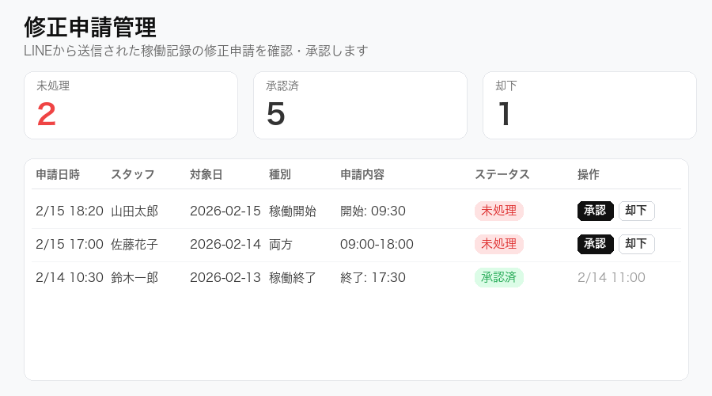

LINE機能がアップデートされました
2026年2月16日
こんにちは。Re:nk運営チームです。
いつもRe:nk OSをご利用いただきありがとうございます。 このたび、LINEの機能が大きくパワーアップしました。
この記事では、何が変わったのかと使い方を、画面の写真つきでわかりやすくご説明します。
今回のアップデートで変わったこと（3つ）
- ボタンの名前が変わりました（「出勤」→「稼働開始」、「退勤」→「稼働終了」）
- メニューボタンが6つに増えました（修正申請・面談の要望が追加）
- 稼働記録の修正がLINEからできるようになりました（新機能）
1. ボタンの名前が変わりました
業務委託でお仕事をされている皆さんにとって、より適切な表現に変更しました。
| 変更前 | 変更後 |
|---|---|
| 出勤報告 | 稼働開始 |
| 退勤報告 | 稼働終了 |
操作方法はこれまでと全く同じです。ボタンの名前が変わっただけなので、そのまま使ってください。
2. メニューボタンが6つに増えました
LINEのトーク画面の下に表示されるメニューが、新しいデザインになりました。

ボタンの説明
| ボタン | 何ができる？ |
|---|---|
| 稼働開始 | お仕事の開始を記録します（以前の「出勤報告」と同じです） |
| 稼働終了 | お仕事の終了を記録します（以前の「退勤報告」と同じです） |
| トラブル報告 | 現場で困ったことがあったとき、すぐに報告できます |
| 面談の要望 | 担当者との面談を希望するとき、ワンタップで伝えられます |
| 修正申請 | 稼働記録の押し忘れ・間違いを修正できます（新機能） |
| ヘルプ | 使い方がわからないときの案内を表示します |
メニューが表示されない場合は、トーク画面の下のキーボードアイコンの隣にあるメニューアイコンをタップしてください。
3. 【新機能】稼働記録の修正がLINEからできるようになりました
「稼働開始のボタンを押し忘れた！」 「稼働終了の時刻を間違えた！」
…こんなとき、今までは担当者に連絡して修正してもらう必要がありました。
これからは、LINEから自分で修正の申請ができます。 申請は管理者が確認して承認すると、自動で記録が修正されます。
修正申請のやり方（5ステップ）
全体の流れはこのようになっています。

スマホでの操作はステップ1～4だけ。あとは管理者が対応します。
ステップ1: 「修正申請」ボタンをタップ
LINEのメニューから「修正申請」ボタンをタップしてください。
ステップ2: 修正したい日を選ぶ
直近7日間の稼働記録が一覧で表示されます。 修正したい日のボタンをタップしてください。

各ボタンには日付と稼働時間が表示されるので、どの日を修正したいか一目でわかります。
ステップ3: 修正の種類を選ぶ
どの時刻を修正したいかを選びます。

| 選択肢 | いつ使う？ |
|---|---|
| 稼働開始時刻 | 開始の時刻だけ直したいとき |
| 稼働終了時刻 | 終了の時刻だけ直したいとき |
| 両方 | 開始と終了の両方を直したいとき |
ステップ4: 正しい時刻と理由を入力
修正後の正しい時刻と、修正の理由をテキストで入力して送信してください。
入力の例：
- 「9:30 電車遅延で打刻が遅れたため」
- 「18:00 終了ボタンを押し忘れました」
- 「9:00-18:30 開始・終了ともに押し忘れ」
時刻は「9:30」や「18:00」のように、数字とコロンで入力してください。
ステップ5: 管理者が承認
申請が送信されると、管理者に通知が届きます。 管理者が管理画面で内容を確認し、承認または却下します。

承認されると： - 稼働記録が自動で修正されます - LINEに「承認されました」という通知が届きます
却下された場合： - LINEに「却下されました」という通知と理由が届きます - 内容を修正して、もう一度申請できます
よくある質問
Q. 修正申請できる期間は？
A. 直近7日間の稼働記録が対象です。それより前の記録は担当者にご連絡ください。
Q. 何回まで申請できますか？
A. 1日あたり5件まで申請できます。
Q. 申請してからどのくらいで反映されますか？
A. 管理者が承認した時点ですぐに反映されます。承認のタイミングは管理者の対応状況によります。
Q. 間違って申請してしまった場合は？
A. 管理者が却下できますので、担当者にその旨お伝えください。
Q. メニューが以前のまま（2ボタン）です
A. LINEアプリを一度閉じて、再度開いてみてください。それでも変わらない場合は、担当者にご連絡ください。
まとめ
| 機能 | できること |
|---|---|
| 稼働開始/稼働終了 | お仕事の開始・終了を記録（名前が変わっただけで使い方は同じ） |
| トラブル報告 | 現場の困りごとをすぐ報告 |
| 面談の要望 | 担当者との面談をリクエスト |
| 修正申請（新機能） | 稼働記録の押し忘れ・間違いをLINEから修正 |
| ヘルプ | 使い方の確認 |
稼働記録の押し忘れでお困りの方は、ぜひ「修正申請」機能をお試しください。
ご不明な点があれば、いつでも担当者またはLINEの「ヘルプ」ボタンからお問い合わせください。
Re:nk運営チーム